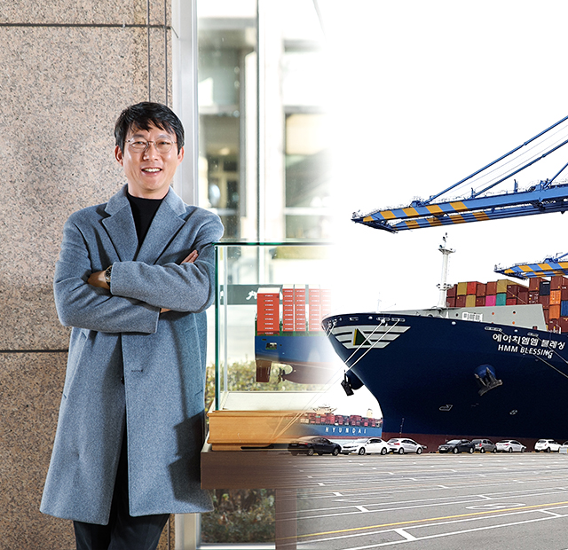
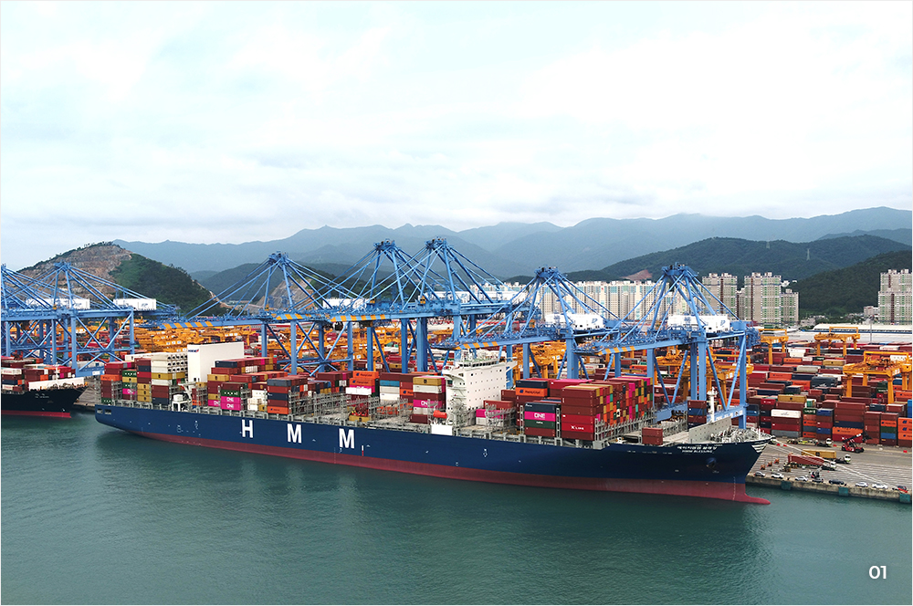
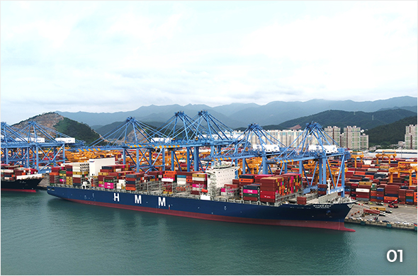
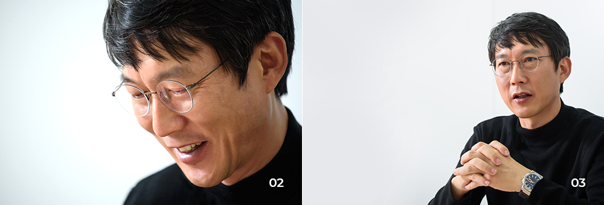
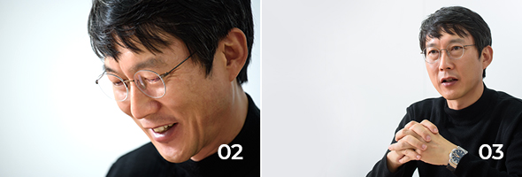
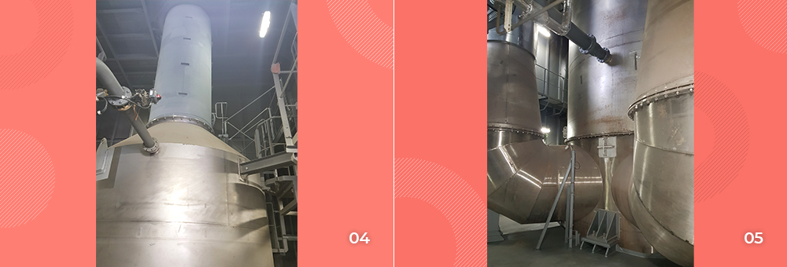
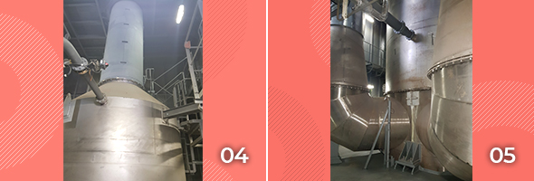

와 제 롤모델이 잡스에요!!! 아이폰 첫 출시되고 나서부터 계속 아이폰 쓰고 있는데 잡스가 너무 그리워요ㅠㅠ 지금은 돈만 벌려고 하는 것 같아서 디자인 발전도 없고ㅠㅠ와 제 롤모델이 잡스에요!!! 아이폰 첫 출시되고 나서부터 계속 아이폰 쓰고 있는데 잡스가 너무 그리워요ㅠㅠ 지금은 돈만 벌려고 하는 것 같아서 디자인 발전도 없고ㅠㅠ와 제 롤모델이 잡스에요!!! 아이폰 첫 출시되고 나서부터 계속 아이폰 쓰고 있는데 잡스가 너무 그리워요ㅠㅠ 지금은 돈만 벌려고 하는 것 같아서 디자인 발전도 없고ㅠㅠ와 제 롤모델이 잡스에요!!! 아이폰 첫 출시되고 나서부터 계속 아이폰 쓰고 있는데 잡스가 너무 그리워요ㅠㅠ 지금은 돈만 벌려고 하는 것 같아서 디자인 발전도 없고ㅠㅠ와 제 롤모델이 잡스에요!!! 아이폰 첫 출시되고 나서부터 계속 아이폰 쓰고 있는데 잡스가 너무 그리워요ㅠㅠ 지금은 돈만 벌려고 하는 것 같아서 디자인 발전도 없고ㅠㅠ
HMM 에세이
HMM Blessing호의 첫 운항을 함께 한
이희교 선장
이희교 선장
"전 세계 최초로
스크러버를 장착한
메가 컨테이너선
HMM Blessing호,
현대상선의 새로운 기회
되어줄 것!"
스크러버를 장착한
메가 컨테이너선
HMM Blessing호,
현대상선의 새로운 기회
되어줄 것!"

글
편집실
사진
김선재(페니레인 스튜디오)
가 연지동 사옥에서 HMM Blessing호의 첫 항해를 마치고 돌아온 이희교 선장을 만났다. 지난 6월 필리핀 수빅에서 출항한 HMM Blessing호는 곧장 남미 서안 항로로 투입돼 홍콩과 중국 닝보를 거쳐 멕시코와 칠레로 가는 77일의 여정을 시작했다. 1992년 현대상선 입사해 27년 동안 오대양 육대주를 누빈 이희교 선장. HMM Blessing호 인수 후 첫 항해를 함께한 이 선장의 소감을 들어봤다.
Q. HMM Blessing호 인수 후 첫 항해를 함께한 감회가 궁금합니다.
여러 가지 도전적인 미션들과 함께 선박을 인수한 만큼, 첫 항차를 시작할 때만 해도 걱정이 많았던 게 사실이에요. 다들 알다시피 신조선박이 자동차처럼 완벽한 상태로 나오는 게 아니잖아요. 처음 장착하는 기기에 대해 많은 노하우가 축적되지 않은 상태에서 항해를 준비해야 했기에 우려가 컸어요. 그래서 출항 두 달 전부터 먼저 가서 본선 기관장이하 전 항해, 기관사관들이 많은 공부를 했습니다. 메이커 엔지니어를 통해 운용방법과 트러블 관리방법 등을 면밀히 습득했음에도 시운전 과정에서 예상치 못한 문제들이 종종 발생해 긴장을 늦출 수 없었습니다.
한마음 한뜻으로 문제점을 해결해나가며 첫 항차를 무사히 마칠 수 있게 해준 동료 선원들, 인수작업을 함께한 신조감독들과 HMM Primise호 고병찬 선장이하 선원들에게 감사한 마음입니다. 후임 선장에게 선박을 인계하고 하선하려는데, 마치 자식을 두고 떠나는 부모의 마음 같은 미묘한 감정을 느꼈던 기억도 나는데요.(웃음) 우리 손으로 하나하나 체계를 잡은 ‘우리 배’라는 생각 때문인지 다른 선박들보다 애정이 많이 갔던 것 같아요.
Q. HMM Blessing호는 전 세계를 운항 중인 1만 1,000TEU급 이상의 메가 컨테이너선 중 유일하게, 그리고 가장 큰 규모의 스크러버를 장착한 선박이죠. 직접 운항해보니 어떤 점이 다르던가요?
HMM Blessing호에는 선박 연료를 태우고 배출되는 가스에 포함된 황산화물을 국제 규제기준에 맞게 낮출 수 있는 스크러버가 장착돼 있습니다. 배기가스를 정화하는 장비인 만큼 스크러버는 기관실의 가장 높은 곳에 자리하고 있는데요. 엔진의 열기가 고스란히 전해지는 메인엔진룸의 좁은 통로와 계단을 통과해 3개 층을 더 올라가면, 한눈에 들어오지도 않는 엄청난 크기의 스크러버 2대가 눈에 들어옵니다. HMM Blessing호의 기관실은 무인화를 염두에 두고 설계된 것이지만 엔진 등 주요 장비의 안정화와 처음 사용하는 스크러버의 원활한 운용을 위해 기관사관들이 기관실에 24시간 상주하면서 4시간씩 교대근무를 했습니다. 스크러버 사용과 관련하여 아직 각국 항만 당국의 규정이 명확하게 제시되지 않았다는 점도 큰 변수였는데요. 현장에 파견된 신조감독 및 관련부서와 지속적으로 협의해 하나하나 해결해갔습니다.


01
전 세계를 운항 중인 1만 1,000TEU급 이상의 메가
컨테이너선 중 유일하게, 그리고 가장 큰 규모의
스크러버를 장착한 HMM Blessing호
Q. HMM Blessing호는 신조 과정부터 타 선박과 달라 신경 써야 할 부분이 많았다고요.
처음 HMM Blessing호가 발주되던 당시 선박 설계도에는 스크러버 장비가 없었어요. 현대상선이 외국선주로부터 HMM Blessing호를 인수한 이후, 기관실의 기존 장비를 뜯어내고 스크러버 운영 장비를 새로 단 거죠. 일반적인 신조와 달리 2년간 건조가 중단됐던 선박을 한국조선소가 아닌 필리핀이라는 낯선 곳에서 장기간 인수 작업을 했고, 신조선임에도 오랜 방치로 인해 일부 기기에서 노후화가 진행되어 전반적인 점검이 필요한 상태였습니다.
예상치 못한 기기 고장으로 사고가 발생하지 않도록, 중요 구역 항해 및 입출항 시 기기 상태 점검은 물론 돌발상황에도 조금 더 대비해야 했죠. 또한 남미 터미널의 경우 대형 컨테이너선이 기항하기엔 항만 조건이 매우 열악해, 관련 부서와 긴밀하게 정보를 교환하며 안전운항에 만전을 기했습니다. 어느 선박이나 마찬가지겠지만, 안전운항과 승무원들의 안전이 가장 중요하니까요.
Q. 스크러버 운영을 기록하는 작업 뿐만 아니라 공유하는 데에도 각별히 신경 썼다고 들었어요.
스크러버가 처음으로 장착된 만큼 공장에서 나온 매뉴얼보다 실제 운영과정에서 얻어지는 노하우를 세밀하게 정리하는 것이 중요했죠. 운항 기간 축적한 스크러버 운영기록이 향후 국내 친환경 선박 제조와 운영을 위한 유산이 될 테니까요.


02,03
연지동 사옥에서 HMM Blessing호의 첫 항해를
마치고 돌아온 이희교 선장을 만났다
Q. 운항기술 외에 해상직원들과의 호흡도 굉장히 중요할 텐데요. 선장님이 이끄는 선박에는 ‘자율과 규율’이 어우러져 있을 것 같은데, 어떤가요?
저는 가급적 직원들을 믿고 직원 한 명 한 명이 스스로 업무에 집중할 수 있도록 유도하는 편입니다. 제한적인 공간에서 구성원 간 호흡은 매우 중요합니다. 특히 모든 것이 처음이었던 HMM Blessing호의 경우, 승무원들이 매일 긴장을 늦출 수 없어 피로가 극에 달했는데, 승무원들이 건강관리를 할 수 있도록 신경을 써야만 했어요. 또 안전과 직결된 사안인 만큼 간혹 직원들이 실수할 땐 엄격하게 대처하면서도, 그때의 감정이 팀워크 불신으로 이어지지 않도록 바로바로 풀기 위해 노력했습니다.
Q. 현대상선에서 HMM BLESSING호의 위상은 무엇이라고 생각하나요?
선박의 황산화물 규제는 갈수록 강화되고 있습니다. 북해, 북미, 유럽항만, 중국 등지에서는 이미 저유황 연료를 사용하도록 요구하고 있습니다. HMM Blessing호는 고가의 저유황유를 대신하여 스크러버를 운전함으로써 원가절감을 실현하고 있습니다. 2020년 이후에는 전세계 모든 해역에서 고가의 저유황유를 사용하여야 하므로 저유황유 가격이 급등할 것으로 보이는 만큼 운임도 동반 상승할 것으로 예상되어 HMM Blessing호의 진가는 더욱 빛날 것입니다.
또한, 스크러버를 첫 번째로 장착한 HMM Blessing호는 현대상선이 추구하는 친환경, 경제운항의 상징적이고 실제적인 의미가 있다고 생각합니다. 스크러버를 통해 대기오염을 줄임과 동시에 고가의 저유황유를 사용하지 않기에 현대상선의 수익구조 개선에도 새로운 기회가 되어줄 겁니다.


04,05HMM Blessing호의 메인엔진룸에 있는엄청난
크기의 스크러버 2대
Q. 끝으로 <바다소리>를 통해 현상인들에게 전하고 싶은 말이 있다면 말씀해주세요.
다들 공감하고 있겠지만, 제가 현대상선에 26년간 근무하면서 지금처럼 회사가 어려웠던 적이 없었던 것 같아요. 모든 현상인이 힘을 모아 1년 뒤에는 보란 듯이 멋지게 터널을 통과해낼 거라고 믿습니다. ‘불굴의 현상인 DNA’로 망망대해를 헤치며 현대상선의 지도를 넓혀나가는 해상직원들에게도 많은 관심을 가져 주시면 감사하겠습니다. 2019년도 건강과 함께 늘 행운이 깃드는 한 해 보내시길 바랍니다.
-
최고예요
322
-
좋아요
322
-
슬퍼요
322
-
그저 그래요
322
-
화나요
322